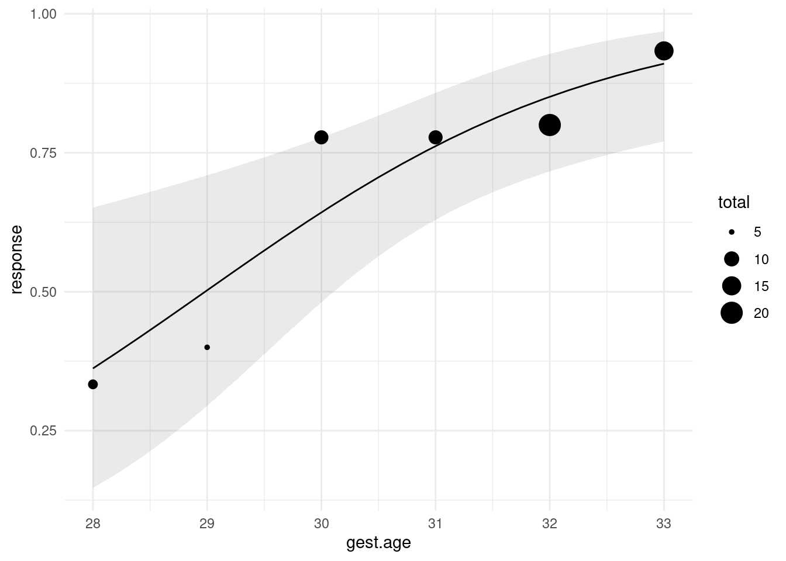
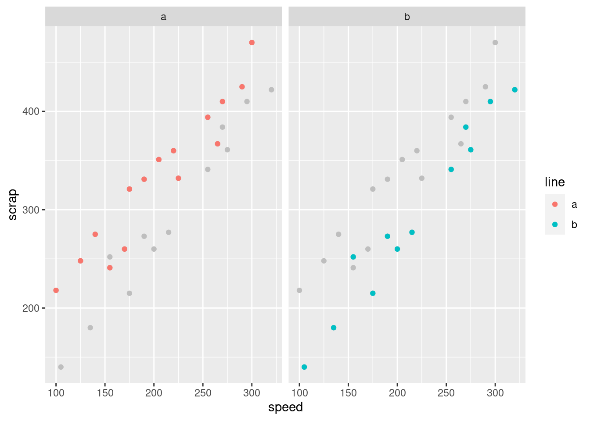
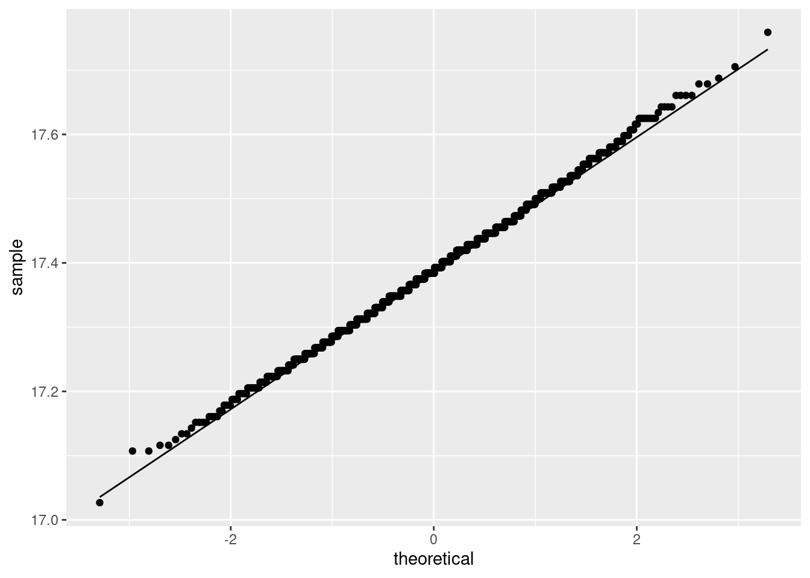

Chapter 11 Matched pairs t and sign test
11.1 Measuring body fat
Athletes are concerned with measuring their body fat percentage. Two different methods are available: one using ultrasound, and the other using X-ray technology. We are interested in whether there is a difference in the mean body fat percentage as measured by these two methods, and if so, how big that difference is. Data on 16 athletes are at link.
Explain briefly why a matched pairs analysis is more suitable for these data than a two-independent-samples analysis (using a two-sample \(t\)-test). You might find that looking at the data (clicking on the link) helps you figure this out.
Read in the data and check that you have a sensible number of rows and columns.
Carry out a suitable test to determine whether the means are the same or different. (At this point, obtain the R output including a P-value.)
What do you conclude from the test?
Obtain a 95% confidence interval for the population mean difference. How is the interval consistent with your test?
Calculate the differences, and make a normal quantile plot of them. Is there any evidence that normality of differences fails? Explain briefly.
11.2 Throwing baseballs and softballs
Can students throw a baseball farther than a softball? A statistics class, containing 24 students, went out to a football field to try to answer this question. Each student warmed up and then threw each type of ball as far as they could. The order of ball types was randomized: some students threw the baseball first, and some threw the softball first. (A softball is bigger than a baseball, so we might expect that a softball would be harder to throw a long way than a baseball.) The data are in http://ritsokiguess.site/datafiles/throw.txt in three columns: the first is a number identifying the student, the second is the distance thrown with the baseball (in yards) and the third is the distance thrown with the softball (also in yards).
Read the data into R. You’ll need to supply some names to the columns.
Calculate a column of differences, baseball minus softball, in the data frame.
Carry out a sign test in R, testing the null hypothesis that the median difference is zero, against the alternative that it is greater than zero. Obtain a P-value. Your option whether you use
smmror not.
11.3 Throwing baseballs and softballs, again
Previously, you carried out a sign test to determine whether students could throw a baseball farther than a softball. This time, we will calculate a confidence interval for the median difference baseball minus softball, using the results of sign tests.
Read the data into R from link, giving appropriate names to the columns, and add a column of differences.
Use
smmrto find a 95% confidence interval for the median difference.What function in
smmrwill run a two-sided sign test and return only the P-value? Check that it works by testing whether the median difference for your data is zero or different from zero.Based on your P-value, do you think 0 is inside the confidence interval or not? Explain briefly.
Obtain a 95% confidence interval for the population median difference, baseball minus softball, using a trial-and-error procedure that determines whether a number of possible medians are inside or outside the CI.
11.4 Changes in salary
A company is growing and would like to attract more employees. The company would like to advertise that salaries there are increasing. To do this, the company randomly samples 20 employees that have been working there since January 2016, and for each of these employees, records their salary in January 2016 and January 2017. The data, with salaries in thousands of dollars, are in link.
Read the data into R and demonstrate that you have two salaries for each of 20 employees.
To compare the salaries, explain briefly why a matched-pairs test would be better than a two-sample test.
Make a suitable graph to assess the assumptions for a matched-pairs \(t\)-test. What does your graph tell you?
Carry out a suitable matched-pairs \(t\)-test on these data. (If you thought in the previous part that this was the wrong thing to do, do it anyway for the purposes of this assignment.) What do you conclude?
The company would like to estimate salaries are increasing, on average. Obtain some output that will enable the company to assess this, and tell the CEO which piece of the output they should look at.
11.5 Body fat revisited
Athletes are concerned with measuring their body fat percentage. Two different methods are available: one using ultrasound, and the other using X-ray technology. We are interested in whether there is a difference in the mean body fat percentage as measured by these two methods, and if so, how big that difference is. Data on 16 athletes are at link.
We saw this data set before.
Read in the data again.
Calculate the differences, and make a normal quantile plot of them. Is there any evidence that normality of differences fails? Explain briefly.
Previously, we did a matched-pairs \(t\)-test for these data. In the light of your normal quantile plot, do you think that was a good idea? Explain briefly.
Use the sign test appropriately to compare the two methods for measuring body fat. (Use
smmrif you wish.) What do you conclude, as ever in the context of the data?
11.6 The dentist and blood pressure
Going to the dentist is scary for a lot of people. One way in which this might show up is that people might have higher blood pressure on average before their dentist’s appointment than an hour after the appointment is done. Ten randomly-chosen individuals have their (systolic) blood pressure measured while they are in a dentist’s waiting room, and then again one hour after their appointment is finished.
The data are in http://ritsokiguess.site/datafiles/blood_pressure1.csv.
Read in and display the data.
What kind of experimental design is this? How do you know? Explain briefly.
Run a suitable \(t\)-test on these data. What do you conclude, in the context of the data?
Run a suitable sign test on these data. What do you conclude, in the context of the data?
Draw a suitable normal quantile plot of these data, one that will enable you to decide between the tests you ran in the previous two parts.
Discuss briefly which of your two tests is the more appropriate one to run.
11.7 French teachers
Twenty high-school French teachers attended a summer institute to improve their French skills. At the beginning of their session, each teacher took a listening test (to test their understanding of spoken French). After 4 weeks of immersion in French, each teacher took a similar listening test again. (The actual French spoken in the two tests was different, so simply taking the first test should not improve the score in the second one; the tests were otherwise similar.) The maximum score on each test was 36, and a higher score is better. The data are here. (Right-click on the link, select “copy link address”, and then paste that URL into R Studio.) The data values are separated by tabs.
The data file has three columns:
- an identification for each teacher
- the teacher’s score in the first test
- the teacher’s score in the second test
Read in and display (some of) the data.
Explain briefly why this is a matched-pairs study.
Run a suitable matched-pairs \(t\)-test to see whether the teachers’ scores have on average improved over the four weeks.
What do you conclude from your test, in the context of the data?
How much is the teachers’ listening skill improving, on average? Give a suitable interval to support your answer.
Make a suitable plot to assess any assumptions for this test.
Do you trust the result of your matched-pairs \(t\)-test? Explain briefly.
Run a suitable sign test, and obtain a suitable (95%) confidence interval. Comment briefly on your results.
Comment briefly on the comparison between your inferences for the mean and the median.
My solutions follow:
11.8 Measuring body fat
Athletes are concerned with measuring their body fat percentage. Two different methods are available: one using ultrasound, and the other using X-ray technology. We are interested in whether there is a difference in the mean body fat percentage as measured by these two methods, and if so, how big that difference is. Data on 16 athletes are at link.
- Explain briefly why a matched pairs analysis is more suitable for these data than a two-independent-samples analysis (using a two-sample \(t\)-test). You might find that looking at the data (clicking on the link) helps you figure this out.
Solution
The data file looks like this:
athlete xray ultrasound
1 5.00 4.75
2 7 3.75
3 9.25 9
4 12 11.75
5 17.25 17
6 29.5 27.5
7 5.5 6.5
8 6 6.75
9 8 8.75
10 8.5 9.5
11 9.25 9.5
12 11 12
13 12 12.25
14 14 15.5
15 17 18
16 18 18.25
The data are two measurements for each of the 16 athletes: that is, each athlete had their body fat percentage measured using both of the two methods. Extra: a two-sample \(t\) approach would be reasonable if one set of 16 athletes had been measured by X-ray and another different set of 16 athletes had been measured by ultrasound. (That is, if there had been 32 athletes in total, with each one randomly assigned to one of the measurement methods.) But that’s not what happened. It is easy to measure one athlete’s body fat percentage using both of the two methods, so a matched pairs design is easy to implement (as well as being better). If you use two independent samples (each athlete doing only one measurement method), you introduce an extra source of variability: athletes differ one from another in body fat, as well as differing possibly by measurement method. If you use a matched-pairs design, you remove the athlete-to-athlete differences, leaving only the differences due to measurement method.
\(\blacksquare\)
- Read in the data and check that you have a sensible number of rows and columns.
Solution
This kind of thing. Since you looked at the data (didn’t you?), you’ll know that the values are separated by single spaces:
##
## ── Column specification ────────────────────────────────────────────────────────────────────────────────────
## cols(
## athlete = col_double(),
## xray = col_double(),
## ultrasound = col_double()
## )16 rows (athletes) and 3 columns, one for each measurement method and one labelling the athletes. All good.
Since 16 is not too much bigger than 10, I got the whole data frame here. (At least, I think that’s the reason I got more than 10 rows.) In an R Notebook, you’ll see the first ten rows as normal, with a button to click to see the other six.
\(\blacksquare\)
- Carry out a suitable test to determine whether the means are the same or different. (At this point, obtain the R output including a P-value.)
Solution
Feed the two columns into t.test along with
paired=T. This is a two-sided test, so we don’t have to
take any special steps for that. Note that we’re back to the
“old-fashioned” version of t.test that does not
allow data=, so we have to go the with way:
##
## Paired t-test
##
## data: xray and ultrasound
## t = -0.30801, df = 15, p-value = 0.7623
## alternative hypothesis: true difference in means is not equal to 0
## 95 percent confidence interval:
## -0.7425068 0.5550068
## sample estimates:
## mean of the differences
## -0.09375\(\blacksquare\)
- What do you conclude from the test?
Solution
The P-value of 0.7623 is not at all small, so there is no way we can reject the null hypothesis.4 My hat stays on my head. There is no evidence of a difference in means; we can act as if the two methods produce the same mean body fat percentage. That is to say, on this evidence we can use either method, whichever one is cheaper or more convenient.
\(\blacksquare\)
- Obtain a 95% confidence interval for the population mean difference. How is the interval consistent with your test?
Solution
You don’t even need to do any more coding: the test was two-sided, so just pick the confidence interval off the output above: \(-0.74\) to 0.56. The interval includes both positive and negative values (or, 0 is inside the interval), so the difference could go either way. This is entirely consistent with not being able to reject the null.
\(\blacksquare\)
- Calculate the differences, and make a normal quantile plot of them. Is there any evidence that normality of differences fails? Explain briefly.
Solution
The smoothest5 I learned yesterday that the Welsh word for “ironing” is smwddio, which seems weird until you say it out loud: it sounds like “smoothio”.
way to do this is to
use a pipeline: use a mutate to create the column of
differences, and then pipe that into ggplot, omitting the
data frame that would normally go first (the input data frame here
is the new one with the differences in it, which doesn’t have a
name). I’ll make a normal quantile plot in a moment, but if you
haven’t seen that yet, the plot to make is a histogram:

I don’t know whether you’d call that “approximately normal” or not. We are in kind of a double-bind with this one: the sample size is small, so normality matters, but with a small sample, the data might not look very normal. It’s kind of skewed right, but most of the evidence for the skewness is contained in those two observations with difference 2 and above, which is pretty flimsy evidence for anything. (In the normal quantile plot below, the suggestion is that those two observations really are a bit too large. It’s easier to tell there.)
Below, I’m repeating the calculation of the differences, which is inefficient. If I’m going to draw two graphs of the differences, the right way is to calculate the differences , then use that new data frame twice. But you’re probably only going to draw either the histogram or the normal quantile plot, not both, so you can use the appropriate one of my two bits of code. The normal quantile plot:
bodyfat %>%
mutate(diff = xray - ultrasound) %>%
ggplot(aes(sample = diff)) + stat_qq() + stat_qq_line()
This is showing a little evidence of skewness or outliers (depending on your point of view: either is good). The lowest and highest values are both too high, and the pattern of points on the plot is kind of curved (which would be evidence of skewness). Or you could say that the two highest values are too high, with the other values being more or less in line (that would be evidence of outliers at the upper end). I like outliers better than skewness, since those bottom-end points are not far off the line. I would also accept “no substantial problems”, if you can make the case that those two highest points are not too far off the line. With only 16 observations as we have here, even truly normal data would stray off the line a bit.
As ever, your explanation is more important than your conclusion. Can you justify what you think?
If you took your differences the other way around, as
ultrasound minus xray, your plot will also be the
other way around, with the “outliers” at the bottom. That’s good
too.
Where this is going (which I didn’t ask you) is whether or not we trust the result of the matched pairs test. I would say that the test is so far from being significant, and the failure of normality is not gross, that it is hard to imagine any alternative test coming up with a significant result. So I would be happy to trust this paired \(t\)-test.
\(\blacksquare\)
11.9 Throwing baseballs and softballs
Can students throw a baseball farther than a softball? A statistics class, containing 24 students, went out to a football field to try to answer this question. Each student warmed up and then threw each type of ball as far as they could. The order of ball types was randomized: some students threw the baseball first, and some threw the softball first. (A softball is bigger than a baseball, so we might expect that a softball would be harder to throw a long way than a baseball.) The data are in http://ritsokiguess.site/datafiles/throw.txt in three columns: the first is a number identifying the student, the second is the distance thrown with the baseball (in yards) and the third is the distance thrown with the softball (also in yards).
- Read the data into R. You’ll need to supply some names to the columns.
Solution
This kind of thing:
myurl="http://ritsokiguess.site/datafiles/throw.txt"
throws=read_delim(myurl," ",col_names=c("student","baseball","softball"))##
## ── Column specification ────────────────────────────────────────────────────────────────────────────────────
## cols(
## student = col_double(),
## baseball = col_double(),
## softball = col_double()
## )This is one of those times where we have to tell R what names to give
the columns. Or you can put col_names=F and leave the
columns called X1, X2, X3 or whatever they end up as.
\(\blacksquare\)
- Calculate a column of differences, baseball minus softball, in the data frame.
Solution
Add it to the data frame using mutate. Use the
right-arrow assignment to create what I called
throws2 below, or put something like
throws2 <- on the beginning of the line. Your choice.
\(\blacksquare\)
- Carry out a sign test in R, testing the null hypothesis
that the median difference is zero, against the alternative that
it is greater than zero. Obtain a P-value. Your option whether you use
smmror not.
Solution
I think using smmr is way easier, so I’ll do that
first. There is even a shortcut in that the null median defaults to
zero, which is exactly what we want here:
## $above_below
## below above
## 2 21
##
## $p_values
## alternative p_value
## 1 lower 9.999971e-01
## 2 upper 3.302097e-05
## 3 two-sided 6.604195e-05We want, this time, the upper-tailed one-sided test, since we want to prove that students can throw a baseball a longer distance than a softball. Thus the P-value we want is 0.000033.
To build it yourself, you know the steps by now. First step is to count how many differences are greater and less than zero:
##
## FALSE TRUE
## 3 21or
##
## FALSE TRUE
## 22 2or, since we have things in a data frame,
or count those less than zero. I’d take any of those.
Note that these are not all the same. One of the differences is in fact exactly zero. The technically right thing to do with the zero difference is to throw it away (leaving 23 differences with 2 negative and 21 positive). I would take that, or 2 or 3 negative differences out of 24 (depending on whether you count “greater than zero” or “less than zero”). We hope that this won’t make a material difference to the P-value; it’ll make some difference, but won’t (we hope) change the conclusion about whether to reject.
Second step is to get a P-value for whichever one of those you got, from the appropriate binomial distribution.
The P-value is the probability of getting 21 (or 22) positive differences out of 24 (or 23) or more, since this is the end of the distribution we should be at if the alternative hypothesis is correct. Thus any of these will get you a defensible P-value:
## [1] 3.302097e-05## [1] 1.7941e-05## [1] 0.0001385808## [1] 3.302097e-05## [1] 1.7941e-05## [1] 0.0001385808The first and fourth of those are the same as smmr (throwing
away the exactly-median value).
As we hoped, there is no material difference here: there is no doubt with any of these possibilities that we will reject a median difference of zero in favour of a median difference greater than zero.
\(\blacksquare\)
11.10 Throwing baseballs and softballs, again
Previously, you carried out a sign test to determine whether students could throw a baseball farther than a softball. This time, we will calculate a confidence interval for the median difference baseball minus softball, using the results of sign tests.
- Read the data into R from link, giving appropriate names to the columns, and add a column of differences.
Solution
I did it this way, combining the reading of the data with the calculation of the differences in one pipe:
myurl <- "http://ritsokiguess.site/datafiles/throw.txt"
throws <- read_delim(myurl, " ", col_names = c("student", "baseball", "softball")) %>%
mutate(diff = baseball - softball)##
## ── Column specification ────────────────────────────────────────────────────────────────────────────────────
## cols(
## student = col_double(),
## baseball = col_double(),
## softball = col_double()
## )\(\blacksquare\)
- Use
smmrto find a 95% confidence interval for the median difference.
Solution
ci_median, with 95% being the default confidence level:
## [1] 2.002930 8.9990232 to 9. The ends of a CI for the median will be data values, which are all whole numbers, so round off that 8.999.
\(\blacksquare\)
- What function in
smmrwill run a two-sided sign test and return only the P-value? Check that it works by testing whether the median difference for your data is zero or different from zero.
Solution
The rest of the way, we are trying to reproduce that confidence
interval by finding it ourselves.
The function is called pval_sign. If you haven’t run into it
before, in R Studio click on Packages, find smmr, and
click on its name. This will bring up package help, which
includes a list of all the functions in the package, along with
a brief description of what each one does. (Clicking
on a function name brings up the help for that function.)
Let’s check that it works properly by repeating the previous
sign_test and verifying that pval_sign gives
the same thing:
## $above_below
## below above
## 2 21
##
## $p_values
## alternative p_value
## 1 lower 9.999971e-01
## 2 upper 3.302097e-05
## 3 two-sided 6.604195e-05## [1] 6.604195e-05The P-values are the same (for the two-sided test) and both small, so the median difference is not zero.
\(\blacksquare\)
- Based on your P-value, do you think 0 is inside the confidence interval or not? Explain briefly.
Solution
Absolutely not. The median difference is definitely not zero, so zero cannot be in the confidence interval. Our suspicion, from the one-sided test from earlier, is that the differences were mostly positive (people could throw a baseball farther than a softball, in most cases). So the confidence interval ought to contain only positive values. I ask this because it drives what happens below.
\(\blacksquare\)
- Obtain a 95% confidence interval for the population median difference, baseball minus softball, using a trial-and-error procedure that determines whether a number of possible medians are inside or outside the CI.
Solution
I’ve given you a fair bit of freedom to tackle this as you wish. Anything that makes sense is good: whatever mixture of mindlessness, guesswork and cleverness that you want to employ. The most mindless way to try some values one at a time and see what you get, eg.:
## [1] 0.001489639## [1] 1.168188So median 1 is outside and median 5 is inside the 95% interval. Keep trying values until you’ve figured out where the lower and upper ends of the interval are: where the P-values cross from below 0.05 to above, or vice versa.
Something more intelligent is to make a long list of potential medians, and get the P-value for each of them, eg.:
d <- tibble(my.med = seq(0, 20, 2))
d %>% rowwise() %>%
mutate(pvals = pval_sign(my.med, throws, diff))2 is just inside the interval, 8 is also inside, and 10 is outside. Some closer investigation:
d <- tibble(my.med = seq(0, 2, 0.5))
d %>% rowwise() %>%
mutate(pvals = pval_sign(my.med, throws, diff))The bottom end of the interval actually is 2, since 2 is inside and 1.5 is outside.
d <- tibble(my.med = seq(8, 10, 0.5))
d %>% rowwise() %>%
mutate(pvals = pval_sign(my.med, throws, diff))The top end is 9, 9 being inside and 9.5 outside.
Since the data values are all whole numbers, I think this is accurate enough. The most sophisticated way is the “bisection” idea we saw before. We already have a kickoff for this, since we found, mindlessly, that 1 is outside the interval on the low end and 5 is inside, so the lower limit has to be between 1 and 5. Let’s try halfway between, ie. 3:
## [1] 0.3833103Inside, so lower limit is between 1 and 3. This can be automated, thus:
lo <- 1
hi <- 3
while (abs(hi - lo) > 0.1) {
try <- (lo + hi) / 2
ptry <- pval_sign(try, throws, diff)
if (ptry > 0.05) {
hi <- try
} else {
lo <- try
}
}
c(lo, hi)## [1] 1.9375 2.0000The difficult bit is to decide whether the value try becomes
the new lo or the new hi. If the P-value for the
median of try is greater than 0.05, try is inside
the interval, and it becomes the new hi; otherwise it’s
outside and becomes the new lo. Whatever the values are,
lo is always outside the interval and hi is always
inside, and they move closer and closer to each other.
At the other end of the interval, lo is inside and
hi is outside, so there is a little switching around within
the loop. For starting values, you can be fairly mindless: for
example, we know that 5 is inside and something big like 20 must be outside:
lo <- 5
hi <- 20
while (abs(hi - lo) > 0.1) {
try <- (lo + hi) / 2
ptry <- pval_sign(try, throws, diff)
if (ptry > 0.05) {
lo <- try
} else {
hi <- try
}
}
c(lo, hi)## [1] 8.984375 9.042969The interval goes from 2 to (as calculated here) about 9. (This is
apparently the same as ci_median in smmr got.)
ci_median uses the bisection method with a smaller “tolerance” than we
did, so its answer is more accurate. It looks as if the interval goes
from 2 to 9: that is, students can throw a baseball on average between
2 and 9 feet further than they can throw a softball.
\(\blacksquare\)
11.11 Changes in salary
A company is growing and would like to attract more employees. The company would like to advertise that salaries there are increasing. To do this, the company randomly samples 20 employees that have been working there since January 2016, and for each of these employees, records their salary in January 2016 and January 2017. The data, with salaries in thousands of dollars, are in link.
- Read the data into R and demonstrate that you have two salaries for each of 20 employees.
Solution
Looking at the file, we see that the values are separated by exactly one space:
##
## ── Column specification ────────────────────────────────────────────────────────────────────────────────────
## cols(
## employee = col_character(),
## jan2016 = col_double(),
## jan2017 = col_double()
## )There are 20 employees (rows), and two columns of salaries: for each employee in the data set, their salary in January 2016 and in January 2017 (thus, two salaries for each employee).
\(\blacksquare\)
- To compare the salaries, explain briefly why a matched-pairs test would be better than a two-sample test.
Solution
A matched-pairs test would be better because we have two observations (salaries) for each subject (employee). A two-sample test would be appropriate if we had two separate sets of employees, one set with their salaries recorded in 2016 and the other with their salaries recorded in 2017. That is not what we have here. You can go after this either way: why a matched-pairs approach is appropriate, or why a two-sample approach is not (or a bit of both).
\(\blacksquare\)
- Make a suitable graph to assess the assumptions for a matched-pairs \(t\)-test. What does your graph tell you?
Solution
This requires thought first before you do any coding (and this is the reason for this one being four points). What has to be at least approximately normally distributed is the set of differences, salary at one time point minus the salary at the other, for each employee. The individual salaries don’t have to be normally distributed at all. We don’t have the differences here, so we have to calculate them first. The smoothest way is to make a pipeline:
salaries %>%
mutate(diff = jan2017 - jan2016) %>%
ggplot(aes(sample = diff)) + stat_qq() + stat_qq_line()
A couple of coding notes: (i) you can take the differences 2016 minus
2017 if you like (then they will tend to be negative), (ii)
ggplot used in a pipeline like this does not have a
data frame first (the data frame used is the nameless output from the
mutate, with the differences in it).
Also, there’s no problem doing the mutate, saving that, and
then feeding the saved data frame into ggplot. If you find
that clearer, go for it.
As for what I see: I think those points get a bit far from the line at the high and low ends: the high values are too high and the low values are too low, which is to say that we have outliers at both ends, or the distribution has long tails (either way of saying it is good).
The important conclusion here is whether these differences are normal enough to trust a matched pairs \(t\)-test here. We have a sample of size 20, so the central limit theorem will help us some, but you can reasonably say that these tails are too long and that we should not trust a matched-pairs \(t\)-test.
I actually wanted you to practice doing a matched-pairs \(t\)-test anyway, hence my comment in the next part, but the result is probably not so trustworthy.
\(\blacksquare\)
- Carry out a suitable matched-pairs \(t\)-test on these data. (If you thought in the previous part that this was the wrong thing to do, do it anyway for the purposes of this assignment.) What do you conclude?
Solution
The company is trying to prove that salaries are increasing over time, so we need a one-sided alternative. Following through the procedure, even though you may not trust it much:
##
## Paired t-test
##
## data: jan2016 and jan2017
## t = -10.092, df = 19, p-value = 2.271e-09
## alternative hypothesis: true difference in means is less than 0
## 95 percent confidence interval:
## -Inf -5.125252
## sample estimates:
## mean of the differences
## -6.185You could also have the years the other way around, in which case the alternative has to be the other way around as well:
##
## Paired t-test
##
## data: jan2017 and jan2016
## t = 10.092, df = 19, p-value = 2.271e-09
## alternative hypothesis: true difference in means is greater than 0
## 95 percent confidence interval:
## 5.125252 Inf
## sample estimates:
## mean of the differences
## 6.185Or, if you saved the data frame with the differences in it, do a
one-sample test on those, again making sure that you get the
alternative right. I didn’t save it, so I’m calculating the
differences again:
salaries %>%
mutate(diff = jan2017 - jan2016) %>%
with(., t.test(diff, mu = 0, alternative = "greater"))##
## One Sample t-test
##
## data: diff
## t = 10.092, df = 19, p-value = 2.271e-09
## alternative hypothesis: true mean is greater than 0
## 95 percent confidence interval:
## 5.125252 Inf
## sample estimates:
## mean of x
## 6.185Whichever way you do it, the P-value is the same \(2.271 \times 10^{-9}\), which is a whole lot less than 0.05, so there is no doubt at all that salaries are increasing.
(Your intuition ought to have expected something like this, because everyone’s 2017 salary appears to be greater than their 2016 salary.)
Extra: you might be feeling that we ought to be doing a matched-pairs sign test, which you could do this way:
## $above_below
## below above
## 0 20
##
## $p_values
## alternative p_value
## 1 lower 1.000000e+00
## 2 upper 9.536743e-07
## 3 two-sided 1.907349e-06and then take the “upper” P-value, which is in the same ballpark as the one from the \(t\)-test. So the salaries really are increasing, whether you believe the \(t\)-test or not. And note that every single employee’s salary increased.
(Again, the “missing” data frame in sign_test is the nameless
one with the differences in it.)
\(\blacksquare\)
- The company would like to estimate salaries are increasing, on average. Obtain some output that will enable the company to assess this, and tell the CEO which piece of the output they should look at.
Solution
A confidence interval. 95% is fine. As before, we have to run
t.test again because we ran a one-sided test and a
confidence interval for us is two-sided:
##
## Paired t-test
##
## data: jan2017 and jan2016
## t = 10.092, df = 19, p-value = 4.542e-09
## alternative hypothesis: true difference in means is not equal to 0
## 95 percent confidence interval:
## 4.902231 7.467769
## sample estimates:
## mean of the differences
## 6.185Between about $5,000 and about $7,500. This is what to tell the CEO.
\(\blacksquare\)
11.12 Body fat revisited
Athletes are concerned with measuring their body fat percentage. Two different methods are available: one using ultrasound, and the other using X-ray technology. We are interested in whether there is a difference in the mean body fat percentage as measured by these two methods, and if so, how big that difference is. Data on 16 athletes are at link.
We saw this data set before.
- Read in the data again.
Solution
This kind of thing. Since you looked at the data (didn’t you?), you’ll know that the values are separated by single spaces:
##
## ── Column specification ────────────────────────────────────────────────────────────────────────────────────
## cols(
## athlete = col_double(),
## xray = col_double(),
## ultrasound = col_double()
## )\(\blacksquare\)
- Calculate the differences, and make a normal quantile plot of them. Is there any evidence that normality of differences fails? Explain briefly.
Solution
This is a good place to look ahead. We’ll need the differences in two places, most likely: first for the normal quantile plot, and second for the matched-pairs sign test. So we should calculate and save them first:
I seem to be using a 2 on the end to name my dataframe-with-differences, but you can use whatever name you like.
Then, not forgetting to use the data frame that we just made:

This is showing a little evidence of skewness or outliers (depending on your point of view: either is good). The lowest and highest values are both too high, and the pattern of points on the plot is kind of curved (which would be evidence of skewness). Or you could say that the two highest values are too high, with the other values being more or less in line (that would be evidence of outliers at the upper end). I like outliers better than skewness, since those bottom-end points are not far off the line. I would also accept “no substantial problems”, if you can make the case that those two highest points are not too far off the line. With only 16 observations as we have here, even truly normal data would stray off the line a bit.
As ever, your explanation is more important than your conclusion. Can you justify what you think?
If you took your differences the other way around, as
ultrasound minus xray, your plot will also be the
other way around, with the “outliers” at the bottom. That’s good
too.
\(\blacksquare\)
- Previously, we did a matched-pairs \(t\)-test for these data. In the light of your normal quantile plot, do you think that was a good idea? Explain briefly.
Solution
We are looking for the differences to be approximately normal, bearing in mind that we have a sample of size 16, which is not that large. Say what you think here; the points, if I were giving any here, would be for the way in which you support it. The comment I made before when we did a matched-pairs \(t\)-test was that the P-value was so large and non-significant that it was hard to imagine any other test giving a significant result. Another way of saying that is that I considered these differences to be “normal enough”, given the circumstances. You might very well take a different view. You could say that these differences are clearly not normal, and that the sample size of 16 is not large enough to get any substantial help from the Central Limit Theorem. From that point of view, running the \(t\)-test is clearly not advisable.
\(\blacksquare\)
- Use the sign test appropriately to compare the two methods for
measuring body fat. (Use
smmrif you wish.) What do you conclude, as ever in the context of the data?
Solution
That means using a sign test to test the null hypothesis that the median difference is zero, against the alternative that it is not zero. (I don’t see anything here to indicate that we are looking only for positive or only for negative differences, so I think two-sided is right. You need some reason to do a one-sided test, and there isn’t one here.)
Remembering again to use the data frame that has the differences in it:
## $above_below
## below above
## 10 6
##
## $p_values
## alternative p_value
## 1 lower 0.2272491
## 2 upper 0.8949432
## 3 two-sided 0.4544983The two-sided P-value is 0.4545, so we are nowhere near rejecting the null hypothesis that the median difference is zero. There is no evidence that the two methods for measuring body fat show any difference on average.
The table of aboves and belows says that there were 6 positive differences and 10 negative ones. This is not far from an even split, so the lack of significance is entirely what we would expect.
Extra: this is the same conclusion that we drew the last time we looked at these data (with a matched-pairs \(t\)-test). That supports what I said then, which is that the \(t\)-test was so far from being significant, that it could be very wrong without changing the conclusion. That is what seems to have happened.
\(\blacksquare\)
11.13 The dentist and blood pressure
Going to the dentist is scary for a lot of people. One way in which this might show up is that people might have higher blood pressure on average before their dentist’s appointment than an hour after the appointment is done. Ten randomly-chosen individuals have their (systolic) blood pressure measured while they are in a dentist’s waiting room, and then again one hour after their appointment is finished.
The data are in http://ritsokiguess.site/datafiles/blood_pressure1.csv.
- Read in and display the data.
Solution
my_url <- "http://ritsokiguess.site/datafiles/blood_pressure1.csv"
blood_pressure <- read_csv(my_url)##
## ── Column specification ────────────────────────────────────────────────────────────────────────────────────
## cols(
## person = col_character(),
## before = col_double(),
## after = col_double()
## )Aside: A blood pressure is usually given as two numbers, like ``120 over 80’’. The first number, which is the one shown in our data, is called the systolic blood pressure. It is the pressure in the arteries when the heart is pumping. The second is called the diastolic blood pressure, and it is the pressure in the arteries when the heart is resting.
\(\blacksquare\)
- What kind of experimental design is this? How do you know? Explain briefly.
Solution
This is a matched pairs design. We know this because we have two measurements on each person, or the same people were measured before and after seeing the dentist. (The thing that it is not is one group of people measured before seeing the dentist, and a different group of people measured afterwards, so a two-sample test is not the right thing.)
\(\blacksquare\)
- Run a suitable \(t\)-test on these data. What do you conclude, in the context of the data?
Solution
A matched-pairs \(t\)-test, then. Remember, we want to see whether blood pressure is lower afterwards (that is, before is greater than after), so this needs to be one-sided:
##
## Paired t-test
##
## data: before and after
## t = 2.9945, df = 9, p-value = 0.007545
## alternative hypothesis: true difference in means is greater than 0
## 95 percent confidence interval:
## 2.210659 Inf
## sample estimates:
## mean of the differences
## 5.7There are some variations possible here: before and after could be switched (in which case alternative must be reversed also).
Or, you can do a one-sample \(t\) on the differences, with the right alternative corresponding to the way you took differences. If you are looking ahead, you might realize that working out the differences now and adding them to the dataframe will be a good idea:
I took the differences this way around since I was expecting, if anything, the before numbers to be bigger than the after ones. And then:
##
## One Sample t-test
##
## data: difference
## t = 2.9945, df = 9, p-value = 0.007545
## alternative hypothesis: true mean is greater than 0
## 95 percent confidence interval:
## 2.210659 Inf
## sample estimates:
## mean of x
## 5.7If you did the differences the other way around, your alternative will need to be the other way around also.
The P-value (either way) is 0.008,6 Give the P-value, and round it off to about this accuracy so that your reader can see easily (i) how it compares to 0.05, and (ii) about how big it is. More than two decimal places is too many. so we have evidence that the mean blood pressure before is greater than the mean blood pressure after.
\(\blacksquare\)
- Run a suitable sign test on these data. What do you conclude, in the context of the data?
Solution
A sign test on the differences. By this point, you will realize that you will need to have obtained the differences. Get them here if you did not already get them:
## $above_below
## below above
## 2 8
##
## $p_values
## alternative p_value
## 1 lower 0.9892578
## 2 upper 0.0546875
## 3 two-sided 0.1093750This one gives us all three P-values. The way around I found the differences, the one we want is “upper”, 0.055. There is not quite evidence that median blood pressure before is higher.
\(\blacksquare\)
- Draw a suitable normal quantile plot of these data, one that will enable you to decide between the tests you ran in the previous two parts.
Solution
The differences are supposed to be approximately normal if a matched-pairs \(t\)-test is the thing:

\(\blacksquare\)
- Discuss briefly which of your two tests is the more appropriate one to run.
Solution
Make a call about whether the differences are normal enough. You have a couple of angles you can take:
- the lowest two values are too low, so we have two outliers at the low end
- the lowest and highest values are too extreme, so that we have a long-tailed distribution
Either of these would suggest a non-normal distribution, which I think you have to conclude from this plot.
The best answer also considers the sample size: there are only 10 differences, a small sample size, and so we will not get much help from the Central Limit Theorem (the sample size is likely not enough7 But see the Extra. to overcome those two outliers or the long tails). Thus, we should not trust the \(t\)-test and should prefer the sign test.
Extra: you might be disappointed to go through this and come to the conclusion that there was not a decrease in blood pressure between before and after.
What has happened, I think, is that we have only a small sample (10 people), and having 8 positive differences and 2 negative ones is not quite unbalanced enough (with such a small sample) to rule out chance: that is to say, a median difference of zero. The \(t\)-test accounted for the size of the differences, and if you believed the normality was satisfactory, you could demonstrate a difference between before and after. But if you didn’t like the normality, you were out of luck: the only test you have is an apparently not very powerful one.
If you wanted to, you could bootstrap the sampling distribution of the sample mean and see how normal it looks:
tibble(sim = 1:10000) %>%
rowwise() %>%
mutate(the_sample = list(sample(blood_pressure$difference, replace = TRUE))) %>%
mutate(the_mean = mean(the_sample)) %>%
ggplot(aes(sample = the_mean)) + stat_qq() + stat_qq_line()
(Code note: you can do anything with the result of a simulation, and you can use anything that might need to be normal as input to a normal quantile plot. Now that we have the normal quantile plot as a tool, we can use it wherever it might be helpful.)
This is actually not nearly as bad as I was expecting. Even a sample size of 10 is providing some help. The bootstrapped sampling distribution is somewhat left-skewed, which is not a surprise given the two low outliers. However, it is rather close to normal, suggesting that the \(t\)-test is not as bad as we thought.
(I did 10,000 simulations because I was having trouble seeing how non-normal it was. With this many, I can be pretty sure that this distribution is somewhat left-skewed.)
\(\blacksquare\)
11.14 French teachers
Twenty high-school French teachers attended a summer institute to improve their French skills. At the beginning of their session, each teacher took a listening test (to test their understanding of spoken French). After 4 weeks of immersion in French, each teacher took a similar listening test again. (The actual French spoken in the two tests was different, so simply taking the first test should not improve the score in the second one; the tests were otherwise similar.) The maximum score on each test was 36, and a higher score is better. The data are here. (Right-click on the link, select “copy link address”, and then paste that URL into R Studio.) The data values are separated by tabs.
The data file has three columns:
- an identification for each teacher
- the teacher’s score in the first test
- the teacher’s score in the second test
- Read in and display (some of) the data.
Solution
Separated by tabs means read_tsv:
##
## ── Column specification ────────────────────────────────────────────────────────────────────────────────────
## cols(
## id = col_double(),
## pre = col_double(),
## post = col_double()
## )As promised. The score on the first test is called pre and on the second is called post.
\(\blacksquare\)
- Explain briefly why this is a matched-pairs study.
Solution
There are two measurements for each teacher, or, the 20 pre measurements and the 20 post measurements are paired up, namely, the ones that come from the same teacher. Or, if it were two independent samples, our 40 measurements would come from 40 different teachers, but there are only 20 teachers, so the 40 measurements must be paired up.
\(\blacksquare\)
- Run a suitable matched-pairs \(t\)-test to see whether the teachers’ scores have on average improved over the four weeks.
Solution
Seeing whether the scores have improved implies a one-sided test that post is bigger than pre. There are three ways you might do that, any of which is good. Remember that if you are running a test with paired = TRUE, the alternative is relative to the column that is input first, not the first one in alphabetical order or anything like that:
(i):
##
## Paired t-test
##
## data: pre and post
## t = -3.8649, df = 19, p-value = 0.0005216
## alternative hypothesis: true difference in means is less than 0
## 95 percent confidence interval:
## -Inf -1.381502
## sample estimates:
## mean of the differences
## -2.5(ii):
##
## Paired t-test
##
## data: post and pre
## t = 3.8649, df = 19, p-value = 0.0005216
## alternative hypothesis: true difference in means is greater than 0
## 95 percent confidence interval:
## 1.381502 Inf
## sample estimates:
## mean of the differences
## 2.5Your choice between these two might be influenced by whether you think pre comes first, or whether you think it’s easier to decide how post compares to pre. It’s all down to what seems natural to you.
- working out the differences and testing those (but look ahead in the question to see whether you need the differences for anything else: you do):
french %>% mutate(gain = post - pre) -> french1
with(french1, t.test(gain, mu=0, alternative = "greater"))##
## One Sample t-test
##
## data: gain
## t = 3.8649, df = 19, p-value = 0.0005216
## alternative hypothesis: true mean is greater than 0
## 95 percent confidence interval:
## 1.381502 Inf
## sample estimates:
## mean of x
## 2.5This last is an ordinary one-sample test, which saves you having to learn anything new, but requires you to calculate the differences first. You will need the differences for a plot anyway, so this may not be as much extra work as it appears. The right thing to do here is to save the data frame with the differences in it, so that you don’t need to calculate them again later.
A fourth alternative is to calculate the differences as pre minus post, and then switch the alternative around (since if going to the French institute helps, the differences this way will be mostly negative):
french %>% mutate(gain = pre - post) -> french2
with(french2, t.test(gain, mu=0, alternative = "less"))##
## One Sample t-test
##
## data: gain
## t = -3.8649, df = 19, p-value = 0.0005216
## alternative hypothesis: true mean is less than 0
## 95 percent confidence interval:
## -Inf -1.381502
## sample estimates:
## mean of x
## -2.5\(\blacksquare\)
- What do you conclude from your test, in the context of the data?
Solution
The P-value of 0.0005 is much less than 0.05, so we reject the null hypothesis that the mean scores before and after are the same, in favour of the alternative that the mean score afterwards is higher. That is to say, the four-week program is helping the teachers improve their understanding of spoken French.
\(\blacksquare\)
- How much is the teachers’ listening skill improving, on average? Give a suitable interval to support your answer.
Solution
A 95% (or other level) confidence interval for the mean difference. A one-sided test doesn’t give that, so you need to do the test again without the alternative (to make it two-sided), via any of the methods above, such as:
##
## Paired t-test
##
## data: post and pre
## t = 3.8649, df = 19, p-value = 0.001043
## alternative hypothesis: true difference in means is not equal to 0
## 95 percent confidence interval:
## 1.146117 3.853883
## sample estimates:
## mean of the differences
## 2.5This says that, with 95% confidence, the mean test score afterwards is between about 1.1 and 3.9 points higher than before. So that’s how much listening skill is improving on average. Give the suitably rounded interval; the test scores are whole numbers, and there are 20 differences making up the mean, so one decimal is the most you should give.
If you did it the first way:
##
## Paired t-test
##
## data: pre and post
## t = -3.8649, df = 19, p-value = 0.001043
## alternative hypothesis: true difference in means is not equal to 0
## 95 percent confidence interval:
## -3.853883 -1.146117
## sample estimates:
## mean of the differences
## -2.5you have given yourself a bit of work to do, because this is before minus after, so you have to strip off the minus signs and switch the numbers around. Giving the answer with the minus signs is wrong, because I didn’t ask about before minus after. Disentangle it, though, and you’re good.
\(\blacksquare\)
- Make a suitable plot to assess any assumptions for this test.
Solution
The key assumption here is that the differences are approximately normally distributed.
First calculate and save the differences (since you will need them later for a sign test; otherwise you would have to find them again). If you found the differences to make your \(t\)-test, use the ones you saved there.
Assess that with a histogram (with suitable number of bins):

or, better, a normal quantile plot (since the normality is our immediate concern):
 (note that the horizontal lines of points are because the test scores were whole numbers, therefore the differences between them are whole numbers also, and some of the teachers had the same difference in scores as others.)
(note that the horizontal lines of points are because the test scores were whole numbers, therefore the differences between them are whole numbers also, and some of the teachers had the same difference in scores as others.)
\(\blacksquare\)
- Do you trust the result of your matched-pairs \(t\)-test? Explain briefly.
Solution
There are about three considerations here:
- the plot shows an outlier at the low end, but no other real problems.
- the sample size is 20, so we should get some help from the Central Limit Theorem.
- the P-value was really small.
I expect you to mention the first two of those. Make a call about whether you think that outlier is too much of a problem, given the sample size. You could, I think, go either way with this one.
The third of my points says that even if the distribution of differences is not normal enough, and so the P-value is off by a bit, it would take a lot to change it enough to stop it being significant. So I don’t think we need to worry, for myself.
Extra:
We can assess the \(t\)-test by obtaining a bootstrap distribution of the sample mean, by sampling from the differences with replacement:
rerun(1000, sample(french1$gain, replace = T)) %>%
map_dbl(~mean(.)) %>%
enframe() %>%
ggplot(aes(sample=value)) + stat_qq() + stat_qq_line()
The bootstrapped sampling distribution of the sample mean difference is about as normal as you could reasonably wish for, so there was no need to worry. Only a very few of the most extreme samples were at all off the line.
A histogram would be almost as good, but now that you know about the normal quantile plot, the time to use it is when you are specifically interested in normality, as you are here. (If you were interested in shape generally, then a histogram or, if appropriate, a boxplot, would also work.)
The code: the first line takes 1000 bootstrap samples, and the second finds the mean of each one. Instead of saving the sample means, since I was only going to be using them once, I made them into a dataframe, and then made a normal quantile plot of them. The enframe creates a dataframe with a column called value with the means in it, which I use in the plot.
\(\blacksquare\)
- Run a suitable sign test, and obtain a suitable (95%) confidence interval. Comment briefly on your results.
Solution
This works with the differences, that you calculated for the plot, so use the data frame that you saved them in:
## $above_below
## below above
## 1 16
##
## $p_values
## alternative p_value
## 1 lower 0.9999923706
## 2 upper 0.0001373291
## 3 two-sided 0.0002746582## [1] 1.007812 3.000000The P-value is 0.00014, again very small, saying that the median difference is greater than zero, that is, that the test scores after are greater than the test scores before on average. The confidence interval is from 1 to 3 points, indicating that this is how much test scores are increasing on average.
A technique thing: the first time you are going through this, you probably got to this point and realized that you were calculating the differences for the second (or third) time. This is the place to stop and think that you don’t really need to do that, and to go back to the plot you did and save the differences after you have calculated them. Then you edit the code here to use the differences you got before and saved. It doesn’t matter whether you see this the first time you do it or not, but it does matter that you see it before you hand it in. It’s like editing an essay; you need to go back through work that you will be handing in and make sure you did it the best way you could.
\(\blacksquare\)
- Comment briefly on the comparison between your inferences for the mean and the median.
Solution
The upper-tail P-value is 0.0001, in the same ballpark as the \(t\)-test (0.0005). The 95% confidence interval for the median difference is from 1 to 3,8 I think I mentioned elsewhere that the P-value of the sign test, as it depends on the null median for a fixed data set, only changes at a data point. Therefore, the ends of a CI for the median must be data points. again much like the \(t\)-interval (1.1 to 3.9).
This suggests that it doesn’t matter much which test we do, and therefore that the \(t\)-test ought to be better because it uses the data better.9 It uses the actual data values, not just whether each one is positive or negative. This is more evidence that the outlier didn’t have that big of an effect.
Extra: choosing a test on the basis of its P-value is wrong, because as soon as you introduce a choice on that basis, your P-value looks lower than it should; a P-value is based on you doing one test and only that one test. It is reasonable to note, as I did, that the two P-values are about the same and then choose between the tests on some other basis, such as that the \(t\)-test uses the data better.10 If the P-values had come out very different, that would be telling you that it matters which one you use, and you would need to go back and look at your plot to decide. Often, this happens when there is something wrong with the \(t\)-test, but not necessarily.
\(\blacksquare\)